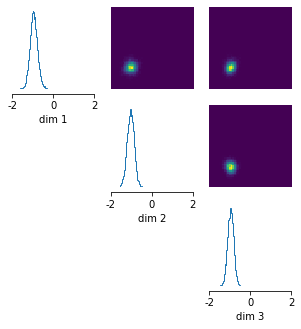

The flexible interface¶
In the previous tutorial, we have demonstrated how sbi can be used to run simulation-based inference with just a single line of code.
In addition to this simple interface, sbi also provides a flexible interface which provides several additional features implemented in sbi.
Note, you find the original version of this notebook at https://github.com/mackelab/sbi/blob/main/tutorial/02_flexible_interface.ipynb in the sbi repository.
Features¶
The flexible interface offers at least the following features:
- performing sequential posterior estimation by focusing on a particular observation over multiple rounds. This can decrease the number of simulations one has to run, but the inference procedure is no longer amortized (tutorial).
- specify your own density estimator, or change hyperparameters of existing ones (e.g. number of hidden units for NSF) (tutorial).
- use an
embedding_netto learn summary features from high-dimensional simulation outputs (tutorial). - provide presimulated data (tutorial)
- run simulations in batches, which can speed up simulations.
- when it makes sense, choose between different methods to sample from the posterior.
- use calibration kernels as proposed by Lueckmann, Goncalves et al. 2017.
Linear Gaussian example¶
We will show an example of how we can use the flexible interface to infer the posterior for an example with a Gaussian likelihood (same example as before). First, we import the inference method we want to use (SNPE, SNLE, or SNRE) and other helper functions.
import torch
from sbi.inference import SNPE, prepare_for_sbi
from sbi.utils.get_nn_models import posterior_nn
import sbi.utils as utils
Next, we define the prior and simulator:
num_dim = 3
prior = utils.BoxUniform(low=-2*torch.ones(num_dim),
high=2*torch.ones(num_dim))
def linear_gaussian(theta):
return theta + 1.0 + torch.randn_like(theta) * 0.1
In the flexible interface, you have to ensure that your simulator and prior adhere the requirements of sbi. You can do so with the prepare_for_sbi() function.
simulator, prior = prepare_for_sbi(linear_gaussian, prior)
Then, we instantiate the inference object:
inference = SNPE(simulator, prior)
And then, we run inference. The last argument proposal=None below indicates that the parameters should be drawn from the prior (None is also the default value). You can find a full list of arguments here.
posterior = inference(num_simulations=500, proposal=None)
HBox(children=(FloatProgress(value=0.0, description='Running 500 simulations.', max=500.0, style=ProgressStyle…
Neural network successfully converged after 142 epochs.
Once we have obtained the posterior, we can .sample(), .log_prob(), or .pairplot() in the same way as for the simple interface.
x_o = torch.zeros(3,)
posterior_samples = posterior.sample((10000,), x=x_o)
# plot posterior samples
_ = utils.pairplot(posterior_samples, limits=[[-2,2],[-2,2],[-2,2]],
fig_size=(5,5))
HBox(children=(FloatProgress(value=0.0, description='Drawing 10000 posterior samples', max=10000.0, style=Prog…

We can always print the posterior to know how it was trained:
print(posterior)
Posterior conditional density p(θ|x) (amortized).
This DirectPosterior-object was obtained with a SNPE-class method using a flow.
It allows to .sample() and .log_prob() the posterior and wraps the output of the .net to avoid leakage into regions with 0 prior probability.